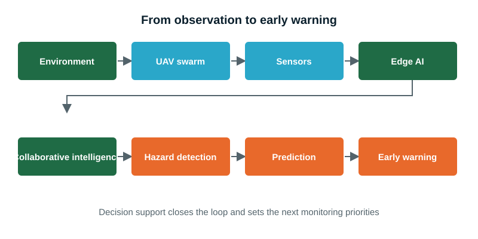
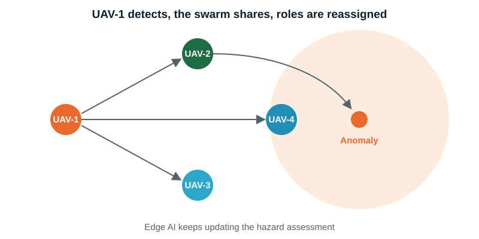

Technical
- Swarm architecture and coordination algorithms
- Edge-AI hazard-detection and prediction models
- Sensor-fusion framework
- Real-time dashboard and digital-twin prototype
Real-time environmental monitoring and disaster management: our 36-month industrial research programme.
Develop an autonomous swarm of AI-enabled UAVs that uses edge computing and collaborative intelligence to continuously monitor the environment, detect and predict hazards in real time, and provide actionable intelligence for early warning and disaster management.

